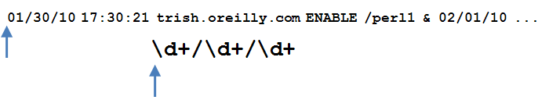
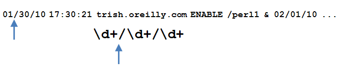
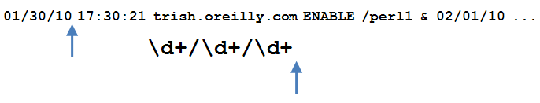
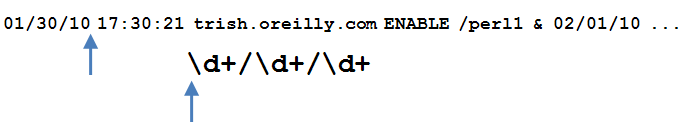
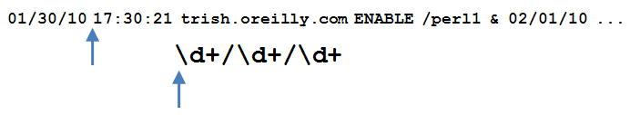
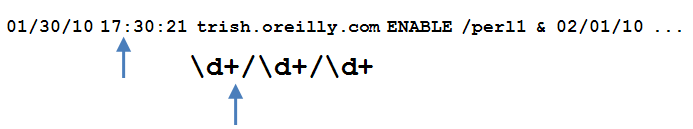
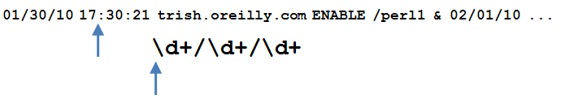
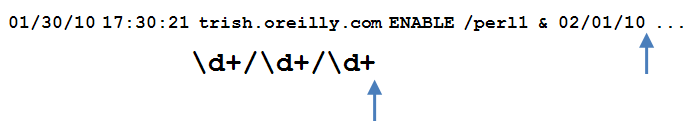
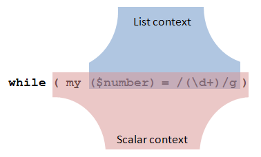

Regular Expressions: Global Matches and More
AAHCClick on A to make all fonts on the page smaller.
Click on A to make all fonts on the page larger.
Click on HC to toggle high contrast mode. When you move your mouse over
some bold words in high contrast mode, related words are automatically highlighted. Text is shown
in black and white.
Lesson Objectives
When you complete this lesson, you will be able to:
Global Matches
“It has been said that arguing against globalization is like arguing against the laws of
gravity.”
-Kofi Annan
Let's go with the flow, then, and look at what globalization means in Perl. So today, we will think globally (and act locally, right there on your computer).
We're going to introduce a new modifier on regular expressions: the /g or global modifier.
/g is both simple and powerful. Your code reads it as, "Don't stop with the first match; keep going!" Let's start with
a basic example to get a feel for it. Create g_simple.pl in your
/perl3 folder as shown:
CODE TO TYPE:
#!/usr/bin/perl
use strict;
use warnings;
$_ = "The cad saw far rat map bay\n";
print;
s/a/o/;
print;
s/a/o/g;
print;
 and run it as shown:
and run it as shown:
INTERACTIVE SESSION:
code:~$ cd perl3
cold:~/perl3$ ./g_simple.pl
The cad saw far rat map bay
The cod saw far rat map bay
The cod sow for rot mop boy
(Don't worry, it's not supposed to make sense.) The first line is the string (in $_) in its initial
state. The second line is the string after a substitution with no modifiers; the first letter,
a, was changed to an o, but the rest remain unchanged. The third line is the
string after a global substitution using the /g modifier; all of the remaining
occurrences of the letter a are changed to o.
If you want to specify an additional modifier (for instance /i for case insensitivity), combine
the letters in any order: /.../gi or /.../ig will both work the same way.
Now let's take a look at how the match and substitution operators evaluate in different
contexts, and then how they evaluate with the /g modifier.
Match and Substitution in Scalar Context
In a scalar context, a match returns true or false depending on whether it succeeded. We'll demonstrate
that with an example. Create pig_sing.pl in your /perl3 folder as shown:
CODE TO TYPE:
#!/usr/bin/perl
use strict;
use warnings;
my $line = "Never try to teach a pig to sing.";
my $result = ( $line =~ /\bpig\b/ );
print " Successful match result: $result\n";
$result = ( $line =~ /jackass/ );
print "Unsuccessful match result: ", (defined $result ? "'$result'" : 'undef'), "\n";
$_ = "It wastes your time and annoys the pig.";
$result = /\bpig\b/;
print " Successful match result: $result\n";
$result = /jackass/;
print "Unsuccessful match result: ", (defined $result ? "'$result'" : 'undef'), "\n";
and run it as shown:
INTERACTIVE SESSION:
cold:~/perl3$ ./pig_sing.pl
Successful match result: 1
Unsuccessful match result: ''
Successful match result: 1
Unsuccessful match result: ''
A successful match in scalar context yields a true value (Perl uses the number
1), and an unsuccessful match in scalar context yields a false value (Perl uses the empty
string). You've been using matches in the conditions of if
and while statements for a while now, but we included it here so you
could see the match operation when it's bound to an explicit variable ($line) and
when implicitly bound to $_.
Now let's see what a substitution does in scalar context. Modify pig_sing.pl as
shown:
CODE TO TYPE:
#!/usr/bin/perl
use strict;
use warnings;
my $line = "Never try to teach a pig to sing.";
my $result = ( $line =~ s/\bpig\b/squirrel/ );
print " Successful substitution result: $result\n";
$result = ( $line =~ s/jackass/zebra/ );
print "Unsuccessful substitution result: ", (defined $result ? "'$result'" : 'undef'), "\n";
$_ = "It wastes your time and annoys the pig.";
$result = s/\bpig\b/squirrel/;
print " Successful substitution result: $result\n";
$result = s/jackass/zebra/;
print "Unsuccessful substitution result: ", (defined $result ? "'$result'" : 'undef'), "\n";
and run it as shown:
INTERACTIVE SESSION:
cold:~/perl3$ ./pig_sing.pl
Successful substitution result: 1
Unsuccessful substitution result: ''
Successful substitution result: 1
Unsuccessful substitution result: ''
A successful substitution in scalar context yields a true value. An unsuccessful
substitution in scalar context yields a false value (again, Perl uses the empty string). Here you can see what the
substitution operation looks like when bound to an explicit variable ($line) and when
implicitly bound to $_.
Match and Substitution in List Context
In a list context, an unsuccessful match returns the empty list; a successful match is a bit more
interesting. Modify pig_sing.pl as shown:
CODE TO TYPE:
#!/usr/bin/perl
use strict;
use warnings;
my $line = "Never try to teach a pig to sing.";
my @results = ( $line =~ s/\bpig\b/squirrel/ );
print " Successful match result: @results\n";
@results = ( $line =~ s/jackass/zebra/ );
print "Unsuccessful match result: ", (defined @results ? "'@results'" : 'undef<none>'), "\n";
$_ = "It wastes your time and annoys the pig.";
@results = s/\b(pig)\b/squirrel/;
print " Successful match result: @results\n";
@results = s/(jackass)/zebra/;
print "Unsuccessful match result: ", (defined @results ? "'@results'" : 'undef<none>'), "\n";
@results = /\s(time).*(p.g)/;
print " Successful match result: @results\n";
and run it as shown:
INTERACTIVE SESSION:
cold:~/perl3$ ./pig_sing.pl
Successful match result: 1
Unsuccessful match result: <none>
Successful match result: pig
Unsuccessful match result: <none>
Successful match result: time pig
In the first successful match, the result is a list containing the single element 1.
In the second successful match, the regex contains a capturing group, and the result is a list
of the portions of the input string that matched the capture: the list ($1). In the third successful match, the
regex contains two capturing groups, and the result is the list of that which matched both
captures: ($1, $2).
The general rule is that a successful match in list context returns a list of that which
matched each set of capturing parentheses, and, if there are no captures, it returns the list (1).
Now let's take a brief detour to consider list assignment in scalar
context. We'll examine that using this one-liner:
INTERACTIVE SESSION:
cold:~/perl3$ perl -le '$x = (@y = 6..10); print $x'
5
cold:~/perl3$
The list assigned to @y contains five items. We place that list assignment in scalar
context and assign the result to $x. When we print $x, the result is 5,
which demonstrates that the result of a list assignment in scalar context is equal to the number of items in the list. Try
another example:
INTERACTIVE SESSION:
cold:~/perl3$ perl -le '$x = ( ($a,$b,$c) = 6..10 ); print $x'
5
cold:~/perl3$
When we combine list assignment in scalar context with the list context result of a match, the
result is a really useful Perl idiom. Modify pig_sing.pl as shown:
CODE TO TYPE:
#!/usr/bin/perl
use strict;
use warnings;
my $line = "Never try to teach a pig to sing.";
if ( my ($res) = ( $line =~ /\b(pig)\b/ ) )
my @results = ( $line =~ /\bpig\b/ );
print " Successful match result: @results\n";
@results = ( $line =~ /jackass/ );
print "Unsuccessful match result: ", (@results ? "'@results'" : '<none>'), "\n";
{
print "Successful match result: $res\n";
}
$_ = "It wastes your time and annoys the pig.";
@results = /\b(pig)\b/;
print " Successful match result: @results\n";
@results = /(jackass)/;
print "Unsuccessful match result: ", (@results ? "'@results'" : '<none>'), "\n";
@results = /\s(time).*(p.g)/;
print " Successful match result: @results\n";
if ( my ($nomatch) = /(aardvark)/ )
{
print "You won't see this\n";
}
elsif ( my ($first, $second) = /\s(time).*(pig)/ )
{
print "Successful match result: $first, $second\n";
}
and run it as shown:
INTERACTIVE SESSION:
cold:~/perl3$ ./pig_sing.pl
Successful match result: pig
Successful match result: time, pig
What's going on here? If the match is successful, there will be a list assignment containing either one
thing (in the first two matches) or two things (in the last match). In a scalar context, that list
assignment will evaluate as 1 or 2 respectively, both of which are true.
But if the match is unsuccessful, there will be nothing in the list, so the number of things assigned will
be zero, which is false. Take a look at the result of assigning an empty list in scalar context.
Type the command below as shown:
INTERACTIVE SESSION:
cold:~/perl3$ perl -le '$x = ( ($a,$b,$c) = () ); print $x'
0
cold:~/perl3$
The idiom is of the form: if ( my ($var1, $var2,...) = /...(...)...(...).../ ).
This lets us assign the matches to variables with meaningful names at the same time that we test whether
the match was successful. This is more readable than the alternative:
OBSERVE:
if ( /...(...)...(...).../ )
{
my ($var1, $var2, ...) = ($1, $2, ...);
Now let's see a substitution in list context. Modify
pig_sing.pl as shown:
CODE TO TYPE:
#!/usr/bin/perl
use strict;
use warnings;
my $line = "Never try to teach a pig to sing.";
if ( my ($res) = ( $line =~ /\b(pig)\b/ ) )
{
print "Successful match result: $res\n";
}
my ($result) = ( $line =~ s/\bpig\b/squirrel/ );
print " Successful substitution result: $result\n";
($result) = ( $line =~ s/jackass/zebra/ );
print "Unsuccessful substitution result: ", (defined $result ? "'$result'" : 'undef'), "\n";
$_ = "It wastes your time and annoys the pig.";
if ( my ($nomatch) = /(aardvark)/ )
{
print "You won't see this\n";
}
elsif ( my ($first, $second) = /\s(time).*(pig)/ )
{
print "Successful match result: $first, $second\n";
}
($result) = s/\b(pig)\b/squirrel/;
print " Successful substitution result: $result\n";
($result) = s/(jackass)/zebra/;
print "Unsuccessful substitution result: ", (defined $result ? "'$result'" : 'undef'), "\n";
and run it as shown:
INTERACTIVE SESSION:
cold:~/perl3$ ./pig_sing.pl
Successful substitution result: 1
Unsuccessful substitution result: ''
Successful substitution result: 1
Unsuccessful substitution result: ''
We get the same result as we did in scalar context.
Global Matching: Scalar and List Contexts
Now let's see the effect of /g in a scalar context. Create g_match_number.pl in
your /perl3 folder as shown:
CODE TO TYPE:
#!/usr/bin/perl
use strict;
use warnings;
while ( <DATA> )
{
print "Starting to match line: ";
while ( /\d+/g )
{
print "Match! ";
}
print "\n";
}
__END__
Sing a song of 6 pence, a pocket full of rye; 4 and 20 blackbirds, baked in a pie.
1969: Apollo 11 returns from the Moon after travelling 828743 nautical miles.
The first five values of Ackermann's function for n=1 are 2, 3, 5, 13, and 65533.
and run it as shown:
INTERACTIVE SESSION:
cold:~/perl3$ ./g_match_number.pl
Starting to match line: Match! Match! Match!
Starting to match line: Match! Match! Match!
Starting to match line: Match! Match! Match! Match! Match! Match!
We get a match for each number found in each of the lines. The match operator matches each item possible,
in turn, returning true each time it is called, until it can't match any more in the input, at which
point it returns false. Now let's do something more interesting with each number. Modify
g_match_number.pl as shown:
CODE TO TYPE:
#!/usr/bin/perl
use strict;
use warnings;
while ( <DATA> )
{
print "Starting to match line: ";
while ( /(\d+)/g )
{
print "Match! - $1";
}
print "\n";
}
__END__
Sing a song of 6 pence, a pocket full of rye; 4 and 20 blackbirds, baked in a pie.
1969: Apollo 11 returns from the Moon after travelling 828743 nautical miles.
The first five values of Ackermann's function for n=1 are 2, 3, 5, 13, and 65533.
and run it as shown:
INTERACTIVE SESSION:
cold:~/perl3$ ./g_match_number.pl
Starting to match line: - 6 - 4 - 20
Starting to match line: - 1969 - 11 - 828743
Starting to match line: - 1 - 2 - 3 - 5 - 13 - 65533
What happened here? Now we have a capturing group (inside the parentheses) in the regex, so just like before, we go through
the while loop every time there is a match, but this time we save whatever
matched \d+ into $1.
Now we're going to make a mistake on purpose. After our earlier discussion
about saving captures into variables as we do the match, you might be tempted to make
this change (make the changes as shown, but don't run it yet):
CODE TO TYPE:
#!/usr/bin/perl
use strict;
use warnings;
while ( <DATA> )
{
print "Starting to match line: ";
while ( my ($number) = /(\d+)/g )
{
print "- $1";
print "- $number";
}
print "\n";
}
__END__
Sing a song of 6 pence, a pocket full of rye; 4 and 20 blackbirds, baked in a pie.
1969: Apollo 11 returns from the Moon after travelling 828743 nautical miles.
The first five values of Ackermann's function for n=1 are 2, 3, 5, 13, and 65533.
and save it, but when you run it, be
prepared to press Ctrl+C as quickly as possible. Okay, ready? Run it, and press
Ctrl+C! (It may take a while to stop running.) See how the program went into an infinite loop? Why
do you suppose that happened?
It's because we are no longer using the /g modifier in a scalar context. By assigning
the match to the list containing the single element $number, we have put $number in list
context. And I haven't told you what /g does for a match in list context yet!
Let's try that now. Modify g_match_number.pl as shown:
CODE TO TYPE:
#!/usr/bin/perl
use strict;
use warnings;
while ( <DATA> )
{
print "Starting to match line: ";
while ( my ($number) = /(\d+)/g )
for my $number ( /(\d+)/g )
{
print " - $number";
}
print "\n";
}
__END__
Sing a song of 6 pence, a pocket full of rye; 4 and 20 blackbirds, baked in a pie.
1969: Apollo 11 returns from the Moon after travelling 828743 nautical miles.
The first five values of Ackermann's function for n=1 are 2, 3, 5, 13, and 65533.
and run it. It's similar to the last version that worked.
keep in mind that while imposes scalar context
and for(each) imposes list context. You should see this:
INTERACTIVE SESSION:
cold:~/perl3$ ./g_match_number.pl
Starting to match line: - 6 - 4 - 20
Starting to match line: - 1969 - 11 - 828743
Starting to match line: - 1 - 2 - 3 - 5 - 13 - 65533
In a list context, a global match returns a list of everything that was matched by the
capturing parentheses. Let's explore this functionality some more. Create g_match_number2.pl in your
/perl3 folder as shown:
CODE TO TYPE:
#!/usr/bin/perl
use strict;
use warnings;
my $line = "01/30/10 17:30:21 trish.oreilly.com ENABLE /perl1 & 02/01/10 09:10:00 tim.oreilly.com ENROLL /perl1";
my ($date1, $date2) = ( $line =~ m!(\d+/\d+/\d+)!g );
print "Date: $date1; date: $date2\n";
and run it as shown:
INTERACTIVE SESSION:
cold:~/perl3$ ./g_match_number2.pl
Date: 01/30/10; date: 02/01/10
Here we have a sample log format containing two entries separated by an ampersand (&). Each
entry consists of several fields. We parse out the date by looking for three sets of one or more digits
separated by slashes. In English, /g tells our program that, "once we've matched everything in the regular expression,
see if we can match it again. If the regex doesn't match at the new location, advance the point at which
we're testing for a match one character at a time until we get a match or we run out of input."
A visual aid may help here. Think of two pointers being advanced as a regex is matched against an input.
Before any matching has taken place, the pointers are in this state:

After matching the first \d+, the pointers are in this state:

Now the input no longer satisfies the \d+ part of the regex, so the regex
engine looks at what comes after the regex pointer, sees a / (forward slash) required, looks at
what comes into the input pointer, sees there is a / there, and advances both pointers:
This keeps going until we reach the end of the regex:

Except for the /g modifier, we would be finished. But /g instructs us to bring the regex pointer
back to the beginning of the regex and to keep going:

The input pointer doesn't precede a digit—it's pointing at a space—so we advance it
until we find something that satisfies that part of the regex:

But after reading in those digits and getting to this point:

...the regex is still not satisfied; it requires a /, but the input has a : (colon), so
the regex engine backtracks:

...and tries again. Eventually it will wind up here:

...having achieved another successful match of the entire regex. The rest of the input has been omitted from the
image for clarity, but in short, the regex engine obeys the /g modifier, resets its
pointer and keeps looking for a match, will match part of the regex, but not the whole thing, and so there are
no more matches. But it has successfully matched twice, so in a scalar context the regex will return
1, and in a list context the match will return either the list (1) (if there
were no capturing parentheses), or the list of all the $1, $2, $3, and so on, that it captured
on each iteration of the regex.
Now you can see why the earlier revision of g_match_number.pl went into an infinite
loop! Although the condition of the while statement imposes scalar context,
the assignment to the single-element list ($number) imposes list context, and because that
is the innermost part of the expression, that's the context in which the match is evaluated:

In a list context, the match returns the list of all the captures. We only save one of them; that capture goes
into $number. Then the list assignment is evaluated in the scalar context imposed by the
while statement. There's one element in the list, so the assignment is true, and the loop is executed. Now
we come back around to test the condition again, but the global match is not being called in scalar context,
so the match is not present in the middle of any iteration through the input—the match finished with that in one round when the match
was called in list context. So the match is ready to run again from the beginning of the input, and that's what the match
does.
This excursion through the fine details of regular expression operation may feel a bit tedious, but stick with it—you
need to understand the operation of matches in list and scalar
contexts with and without the /g modifier thoroughly in order to write your own regexes.
For many programmers regular expressions are a total mystery that they never
understand well and only get to work by accident by copying and pasting old pieces of code and hacking
at them until they seem to work. We accept no mysteries in this course! We're better than that! Let's keep going. Modify
g_match_number2.pl as shown:
CODE TO TYPE:
#!/usr/bin/perl
use strict;
use warnings;
my $line = "01/30/10 17:30:21 trish.oreilly.com ENABLE /perl1 & 02/01/10 09:10:00 tim.oreilly.com ENROLL /perl1";
my ($date1, $date2) = ( $line =~ m!(\d+/\d+/\d+)!g );
print "Date: $date1; date: $date2\n";
my ($date1, $time1, $course1, $date2, $time2, $course2) = ( $line =~ m!([\d/]+)\s+([\d:]+)[^/]*/(\S*)!g );
print "Date: $date1; time: $time1; course: $course1; Date: $date2; time: $time2; course: $course2\n";
and run it as shown:
INTERACTIVE SESSION:
cold:~/perl3$ ./g_match_number2.pl
Date: 01/30/10; time: 17:30:21; course: perl1; Date: 02/01/10; time: 09:10:00; course: perl1
Here you can see the match operator return two sets of three captures; that is, ($1, $2, $3),
twice. This example is somewhat contrived because we'll rarely have exactly two records in a
single input to process this way; it's much more common to want to iterate through
whatever number of records there might be. We'll try that more common usage out now. Modify
g_match_number2.pl in your /perl3 folder as follows:
CODE TO TYPE:
#!/usr/bin/perl
use strict;
use warnings;
$_ = "09/26/10 18:23:17 trish.oreilly.com ENABLE /perl2 & 09/27/10 09:16:23 tim.oreilly.com ENROLL /perl2";
while ( m!([\d/]+)\s+([\d:]+)[^/]*/(\S*)!g )
{
my ($date, $time, $course) = ($1, $2, $3);
print "Date; $date; time: $time; course: $course\n";
}
my ($date1, $time1, $course1, $date2, $time2, $course2) = ( $line =~ m!([\d/]+)\s+([\d:]+)[^/]*/(\S*)!g );
print "Date: $date1; time: $time1; course: $course1; Date: $date2; time: $time2; course: $course2\n";
and run it as shown:
INTERACTIVE SESSION:
cold:~/perl3$ ./g_match_number2.pl
Date; 09/26/10; time: 18:23:17; course: perl2
Date; 09/27/10; time: 09:16:23; course: perl2
We are matching on $_, which keeps the code less cluttered. Usually you will
set $_ implicitly through a readline operator like
<$fh> or <>.
Here's a cool use of matching in a list context where we don't know how many tokens we're going to
match, we just want to match as many as there are. Create g_match_list.pl:
CODE TO TYPE:
#!/usr/bin/perl
use strict;
use warnings;
$_ = join ' ', split /\n/, <<'END_OF_TEXT';
This text is embedded in the program in multiple
lines, but our program splits the heredoc into
a list of lines (which don't contain the newline
characters themselves, because those were what was
split on), and then joins them with single spaces
to form a single long string. All in one expression, too!
END_OF_TEXT
my @words = /(\w+)/g;
print " - $_ - \n" for @words;
and run it as shown:
INTERACTIVE SESSION:
cold:~/perl3$./g_match_list.pl
- This -
- text -
- is -
- embedded -
- in -
- the -
- program -
- in -
. . .
(etc.)
See if you can improve the regular expression so it does a better job of matching
what you think are "words" in the input.
Global Substitution: Scalar and List Contexts
Now that we've covered the behavior of global matching, let's make sure you understand
global substitution. Create g_subs.pl in your /perl3 folder as shown:
CODE TO TYPE:
#!/usr/bin/perl
use strict;
use warnings;
while ( <DATA> )
{
print "Before: $_";
while ( my $result = s/(['"])(\w+)\1/{$2}/g )
{
print " Made $result change(s)\n";
}
print "After: $_";
}
__END__
In this text, "some" words are "quoted", like this: 'quoted'.
That means they're surrounded by either 'single' quotes
or "double" quotes. But an "apostrophe" in a word like "don't"
doesn't "count".
and run it as shown:
INTERACTIVE SESSION:
cold:~/perl3$ ./g_subs.pl
Before: In this text, "some" words are "quoted", like this: 'quoted'.
Made 3 change(s)
After: In this text, {some} words are {quoted}, like this: {quoted}.
Before: That means they're surrounded by either 'single' quotes
Made 1 change(s)
After: That means they're surrounded by either {single} quotes
Before: or "double" quotes. But an "apostrophe" in a word like "don't"
Made 2 change(s)
After: or {double} quotes. But an {apostrophe} in a word like "don't"
Before: doesn't "count".
Made 1 change(s)
After: doesn't {count}.
Unlike the match operator, the substitution operator with /g in a scalar
context does not act as an iterator; it does all of the substitutions and then returns the number
of substitutions made.
And in a list context, it's the same. Modify g_subs.pl as shown:
CODE TO TYPE:
#!/usr/bin/perl
use strict;
use warnings;
while ( <DATA> )
{
print "Before: $_";
while ( my $result = s/(['"])(\w+)\1/{$2}/g )
{
print " Made $result change(s)\n";
}
my @results = s/(['"])(\w+)\1/{$2}/g;
print " Made @results change(s)\n";
print "After: $_";
}
__END__
In this text, "some" words are "quoted," like this: 'quoted.'
That means they're surrounded by either 'single' quotation marks
or "double" quotation marks. But an "apostrophe" in a word like "don't"
doesn't "count." Get it?
and run it. You'll get exactly the same output as
before. In a list context, we see that a substitution with /g returns a list containing
one element, which is the number of changes made. But evaluating a substitution in list context isn't particularly useful.
Nongreedy Matching
"Greed is good"
--Gordon Gecko, Wall Street
Every quantifier that we've met so far in our exploration of regular expressions (*, +, ?, and
{m,n} is greedy: it'll match as much of the input as it can. That's useful, but
sometimes we want the opposite: to match as little as possible. (We need to be careful when we do this though.
To "match as little as possible" can result in "match nothing" and that may not be the
outcome we want.)
The syntax for nongreedy quantifiers is simple and logical; just add a question mark to the
corresponding greedy quantifier. Let's use, for example, \d as an atom to quantify:
| Greedy Regex | Meaning | Nongreedy Regex | Meaning |
|---|
| \d* | Match zero or more digits, preferably as many as possible | \d*? | Match zero or more digits, zero if possible |
| \d+ | Match one or more digits, preferably as many as possible | \d+? | Match one or more digits, one if possible |
| \d? | Match zero or one digits, preferably one | \d?? | Match zero or one digits, preferably zero |
| \d{3,7} | Match 3 to 7 digits, preferably 7 | \d{3,7}? | Match 3 to 7 digits, preferably 3 |
The difference between greedy and nongreedy matching can be illustrated using this
one-liner:
INTERACTIVE SESSION:
cold:~/perl3$ perl -le '$_ = "First pig second pig third pig last pig"; s/(.*)pig/$1cow/; print'
First pig second pig third pig last cow
cold:~/perl3$ perl -le '$_ = "First pig second pig third pig last pig"; s/(.*?)pig/$1cow/; print'
First cow second pig third pig last pig
See how .* matched as many characters as possible whereas .*?
matched as few characters as possible? Now let's see that at work in an example. Create
nongreedy.pl in your /perl3 folder as shown:
CODE TO TYPE:
#!/usr/bin/perl
use strict;
use warnings;
$_ = "abc123def 456ghi7";
print "Greedy: ";
print for /(c.*[def])/;
print "\nNongreedy: ";
print for /(c.*?[def])/;
print "\n";
and run it:
INTERACTIVE SESSION:
cold:~/perl3$ ./nongreedy.pl
Greedy: c123def
Nongreedy: c123d
We use the result of a match containing a capture in a list context to print the
match in a really succinct idiom. So why did that happen? In the first expression, the
.* will match as many characters as possible, which initially means that it will match all
the way to the end of the input (because it's being greedy); but then the regex engine will look at
what comes next in the regex and see that it needs a d, e, or
f. There isn't one though, because the regex has arrived at the end of the string, so it'll backtrack,
undoing one character at a time from the greedy match of .* until it finds its input
pointer in front of a d, e, or f.
In the second expression, the .*? will match as few characters as possible, which
initially means that it matches zero characters. But then the regex engine sees that it needs a
d, e, or f, and it looks at the next character in the
input and it's a 1, which won't do, so it allows the .*? to match one
character, and tries again; but now the next character is a 2, which still won't do, so our regex
allows the .*? to match two characters; but now the next character is a
3, which still won't do, so our regex allows the .*? to match three characters,
and now the next character is a d, which will do, and so it has a match.
That little description of how the regex engine behaves for a greedy quantifier versus a nongreedy
quantifier contains all you need to know about how the two types of quantifier work. Just remember that a
greedy quantifier means that the regex engine will match as many things as possible and then backtrack as
necessary to match the rest of the regex, while a nongreedy quantifier means that the regex engine will
match as few things as possible and then match more things as necessary to match the rest of the regex.
A nongreedy quantifier can often save you from having to create a more complicated regex. For example,
suppose you were parsing some simple HTML. Create match_html.pl in your /perl3
folder as shown:
CODE TO TYPE:
#!/usr/bin/perl
use strict;
use warnings;
$_ = join '', <DATA>;
s/\n//g;
length and print " - $_ -\n" for split /<(.+?)>/;
__END__
<HTML>
<HEAD><TITLE>Lesson 4</TITLE></HEAD>
<BODY>
<H1>Lesson 4: Global Matches</H1>
<P>Here we will learn about the <B>/g</B> modifier.
</P>
</BODY>
</HTML>
and run it:
INTERACTIVE SESSION:
cold:~/perl3$ ./match_html.pl
- HTML -
- HEAD -
- TITLE -
- Lesson 4 -
- /TITLE -
- /HEAD -
- BODY -
- H1 -
- Lesson 4: Global Matches -
- /H1 -
- P -
- Here we will learn about the -
- B -
- /g -
- /B -
- modifier. -
- /P -
- /BODY -
- /HTML -
cold:~/perl3$
That's a useful start to parsing HTML, but suppose we had used greedy matching instead. Modify
the program as shown:
CODE TO TYPE:
#!/usr/bin/perl
use strict;
use warnings;
$_ = join '', <DATA>;
s/\n//g;
length and print " - $_ -\n" for split /<(.+?)>/; split /<(.+)>/;
__END__
<HTML>
<HEAD><TITLE>Lesson 4</TITLE></HEAD>
<BODY>
<H1>Lesson 4: Global Matches</H1>
<P>Here we will learn about the <B>/g</B> modifier.
</P>
</BODY>
</HTML>
and run it. What is going on with the output? Think about why it
looks that way.
You can fix that problem there without resorting to nongreedy quantifiers if you want. This next version of the
program works the same way as the one with the nongreedy quantifier. Modify your code as shown:
CODE TO TYPE:
#!/usr/bin/perl
use strict;
use warnings;
$_ = join '', <DATA>;
s/\n//g;
length and print " - $_ -\n" for split /<(.+)>/; split /<([^>]+)>/;
__END__
<HTML>
<HEAD><TITLE>Lesson 4</TITLE></HEAD>
<BODY>
<H1>Lesson 4: Global Matches</H1>
<P>Here we will learn about the <B>/g</B> modifier.
</P>
</BODY>
</HTML>
But this approach may become difficult to implement when the token that comes after the quantified atom is
more than one character long. So nongreedy quantifiers are definitely worth learning!
Here's another example you can try as a one-liner, taking output from the curl program that
fetches a web page:
INTERACTIVE SESSION:
cold:~/perl3$ curl -s http://www.oreillyschool.com/certificate-programs | perl -nle '/<li>.*?>(.+?)</ and print $1'
Try it! It lists the certificate programs available at the O'Reilly School of Technology (At least, until they change
the format of that page... this is one of the problems of web page scraping. At that point, we'll modify
the one-liner!):
OBSERVE:
C#.NET Programming Certificate
Client-Side Programming Certificate
Database Administration Certificate
Java Programming Certificate
Linux Systems Administration Certificate
Open-Source Programming Certificate
Perl Programming Certificate
PHP/SQL Programming Certificate
Python Programming Certificate
Web Programming Certificate
Notice that a few items that aren't courses were output. (This is also one of the problems of
parsing HTML: it's a language describing presentation, not semantics.) See if you can modify the
regular expression so that it shows only the courses.
| WARNING | In general, this is not the way to parse HTML, because HTML may contain all kinds of
constructions that defeat a basic regex, for example, angle brackets inside comments. The proper
way to parse any kind of HTML is with a module like HTML::Parser. But if you control the HTML that
will be your program's input and can guarantee that it will always be formatted in a way that your
regexes can parse, you can ignore this restriction, because your input is technically not "HTML." It's "a
custom format that is equivalent to a subset of HTML". |
Wow. That was one long lesson, but an really important one. Now your regular expression expertise has
officially reached an
advanced level! Good work! Keep it up and see you in the next lesson...
Once you finish the lesson, go back to the syllabus to complete the homework.